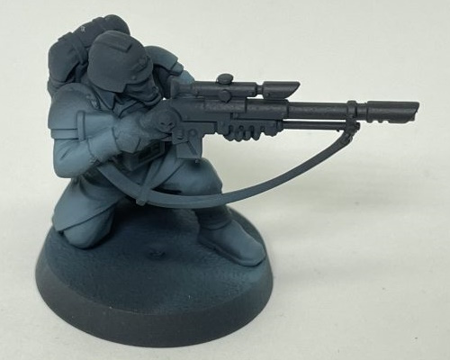
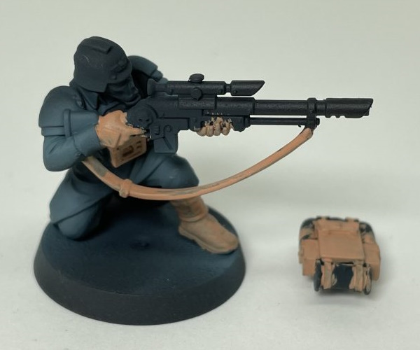
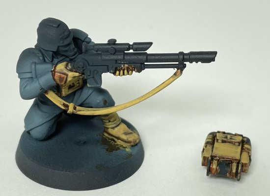
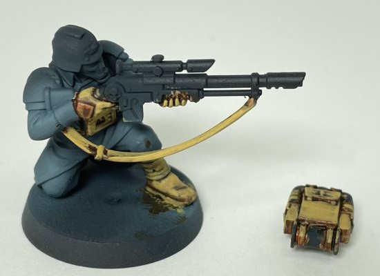
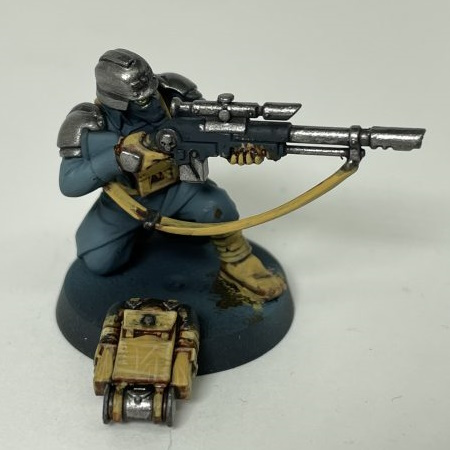
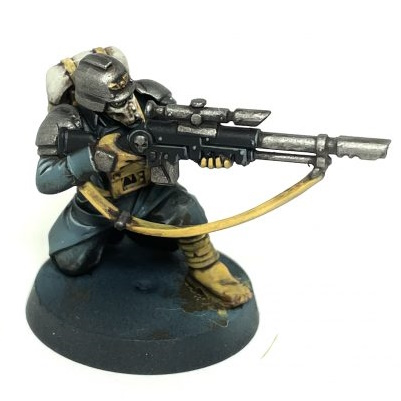

How to Paint Models
As Shown and Taught by a Professional
Below is a set of pictures from a professional painter named Colin Ward. His work is award-winning and truly excellent, and if you want to see more, you can go to his patreon. These are from a post on a popular forum, with other examples of how you can paint the Veteran Guardsmen.
Priming
Also Known as Base Coating
"To get the blue-grey for the greatcoat and pants, I first primed the model black. I then did an overall basecoat of Vallejo Game Color Dark Sea Blue. To highlight, I added some Vallejo Game Color Blue Grey Pale to the Dark Sea Blue and concentrated on the arms, upper chest, lower greatcoat, and knees. For the final airbrush highlight I added more Blue Grey Pale to the previous mix."
 As a pro painter, Mr. Ward knows his stuff, using an assortment of methods, and multiple tools like airbrushes and paintbrushes of the teeniest size to make his models look as real as can be.
Accents
Making your Paints Pop
"I wanted to get a nice desaturated yellow calfskin leather for the gloves, boots, wraps, and pouches. The decision to paint them all in the same yellow ochre was definitely a decision borne of efficiency, but one that works for what is a horde infantry army. I basecoated the leather boots, wraps, straps, pouches, packs, and gloves with Vallejo Model Color Basic Flesh."
 

Mr. Ward mixes colors to truly bring out and accent the different materials on the model, effectively showing the difference between the coat and the leater boots and gloves.
Using Specialty Paints
Mr. Ward goes on to show us how to bring out the metallic objects on a model.
"The steel metallics were basecoated with Vallejo Metal Color Exhaust Manifold, washed with GW Nuln Oil, and highlighted with Vallejo Metal Color Dark Aluminium. This looks a little bright at this stage, but it will get toned down with the oil wash and matte varnish at the end."
Mr. Ward finishes his Guardsmen by adding some finishing touches to the model, and later touches up each model in his group to make sure none of them look especially shiny or dull.
"Eye lenses and rifle lenses were basecoated with P3 Gnarls Green, washed with Vallejo Game Ink Black Green, highlighted with P3 wurm green and Vallejo Game Color Yellow Green. Final sun dot of white in the corner, like painting a gemstone. The gas mask and bedroll were basecoated with P3 Hammerfall Khaki, washed with GW Agrax Earthshade, and highlighted with Vallejo Game Color Deck Tan."
The Final Product
A Krieg Veteran Guardsman Equipped with a Long-las sniper rifle, ready to take on the enemies of man. Thanks Colin!